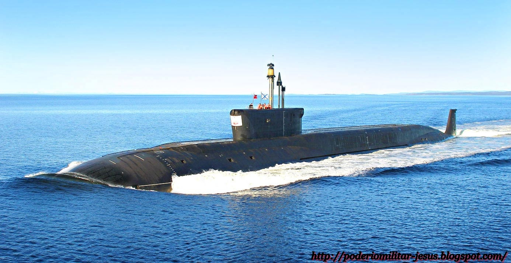

submarinos
SUBMARINOS

Hecho por:
Víctor M. González Serrano
Alberto Gómez Mora
ÍNDICE
HISTORIA
Los primeros submarinos militares
Submarinos en la guerra civil estadounidense
Submarinos en la Primera Guerra Mundial
Submarinos en la Segunda Guerra Mundial
Submarinos nucleares
SLBM
La energia nuclear en la navegación
Gráficos
BIBLIOGRAFÍA
Wikipedia
mgar.net